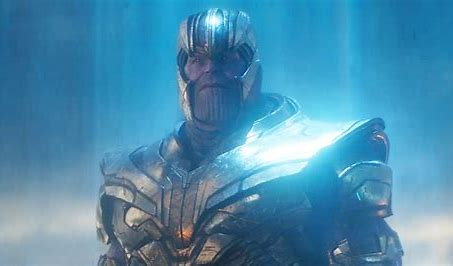
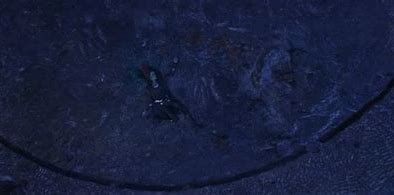
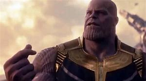
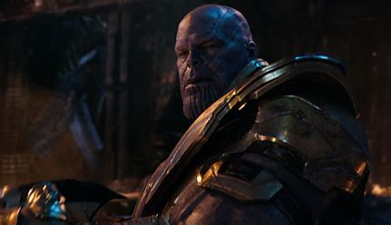

Thanos was usually seen by everyone else as the ultimate personification of sadism, cruelty, megalomania, infinite destruction, death, power, and madness, with his search for the Infinity Stones seen by others as his plot to gain dominion over all the civilizations in the universe. In reality, Thanos was a more complex and tortured soul given that his traumatic past and obsession with completing what he perceived as his destiny had led him to commit horrible actions all in the name of saving the universe even at a great personal sacrifice to himself. He desired to use the Tesseract to look beyond the known worlds to find greater ones that it would unveil. He was also relentless, as seen by his gathering of children from across the galaxy to take as his own so he can raise them as assassins and aid him by tirelessly searching for the Infinity Stones. In addition to this, Thanos had extraordinary willpower, as evidenced by his absolute refusal to succumb to Mantis' sleep-inducing touch despite its ability to usually make her victims docile almost instantly through but a simple touch, with her thus remarking that the Titan was "very strong" in his mental fortitude.
He was extremely intimidating and often unforgiving of failures. The Other once warned Loki that he would know a new kind of pain if he did not give them the Tesseract; this was proven true when he ruthlessly murdered Loki for his failure in retrieving the Tesseract for him and when he tried to kill Thanos. Even though Ebony Maw had never failed Thanos, he still feared his master and father enough that he did not dare go to Titan without having fully taken the Time Stone from Doctor Strange. Thanos threatened Ronan the Accuser that he would bathe the starways in his blood if he failed to deliver the Orb, visibly terrifying Ronan. He even forbade Gamora from rescuing Nebula when the latter fell into a trap whilst on a mission in the Cloud Tombs of Praxius. He had little to no regard for his subordinates, as seen by him showing absolutely no empathy when Ronan killed The Other. Regardless of his disregard for his minions, Thanos was shown to be an extremely skilled and charismatic leader, having been able to inspire fierce loyalty from the Black Order, as well as command the Chitauri and the Outriders, both being highly savage and powerful creatures, unchallenged.
He was also manipulative and mistrustful, sending Ronan to retrieve the Orb for him and not telling him that it contained an Infinity Stone, while also sending Nebula and Gamora to monitor him. He is surprisingly patient, as he keeps a low profile, lurking in the shadows and making others do his work for him even after centuries of failure. He did not make a move for the Infinity Stones directly nor did he openly show that he possessed an Infinity Stone until he was finally ready to collect the stones himself in rapid succession, presumably because he knew possessing one or more of the Infinity Stones would draw unwanted attention, prompting others to attack him and impede his preparations before he was finally ready. Thanos' actions, despite their brutality, were so low that even Doctor Strange, who kept a watchlist of beings that may be a threat to Earth had never heard of Thanos before Dr. Banner told him who the former was.
Despite Thanos' ruthlessness during the early days of his conquest, he was not without compassion, especially when it came to children. When he met the young Gamora during his invasion of her planet, in stark contrast to the claims of Gamora that Thanos killed her parents in front of her, he gently kept her from being a part of the random genocide of her people by giving her the task of balancing a blade he gave her and when her attention turned to her people's screaming, he gently reminded her to remain focused on her task. He especially loved Gamora, deeming her his "favorite daughter"; he even hoped that she would be the one to inherit his throne, despite all her repeated proclamations of hatred, forgave her treachery of not telling him the location of the Soul Stone and allowed her to keep the façade for years before finally deciding to retrieve the Infinity Stones himself and openly made it clear Ronan costing him Gamora as being one of the reasons he was angry with him.
However, despite whatever love he had for Gamora, Thanos was ruthlessly strict and feared by his children, having been the one who turned Nebula into a cyborg, and Ebony Maw fearing his judgment should he fail.
When he finally captured Gamora, Thanos treated her more like a guest than a prisoner. He gave her food and remained patient and appealing despite Gamora's anger, and rather than torturing her for the location of the Soul Stone, he instead had Nebula tortured to make Gamora tell him. He took the lead when they ventured to the Soul Stone's shrine and when they encountered the Red Skull, not knowing if he was friend or foe, he made a gesture telling her to stay back, shielding her with his own body and was utterly heartbroken when he realized he had to kill Gamora to gain the power of the Soul Stone, to the point where he shed tears and sincerely apologized, his grief and pain being sensed by Mantis despite still going through with it as he believed it was for the greater good. When Gamora, upon seeing his victory from the future Nebula's memories, asked on what did he do to the Avengers, rather than suspecting or reprimanding her for not praising and relishing his victory, Thanos merely told her the truth and affectionately cradled his favored daughter's chin as he proudly proclaimed his victory.
Even with all his strictness towards Nebula, Thanos showed that he did hold affection towards her, as when Nebula swore to make him proud, Thanos was visibly pleased and encouraged her to do so. Although his lack of hesitation in torturing her to make Gamora confess the location of the Soul Stone could be another act of favoritism, Thanos did not actually kill her and in the final moments of his life, following Nebula defending his honor, Thanos genuinely thanked her and regretfully acknowledged that he'd been too harsh on her. When his past self saw this recording, he took those words to heart and decided to treat Nebula better such as breaking the chain Ebony Maw had wrapped around Nebula's neck and cradled her chin in his hands affectionately, believing her loyalty and giving her the chance to prove it by bringing him to the future, even though Nebula could have been freed of him in the future had she decided to betray him. He also trusted her to retrieve the stones herself and seemed very concerned when she wasn't answering her comm.
When he learned from Doctor Strange that Ebony Maw was dead, he stated that the quest for the Infinity Stones "extracts a heavy toll" and with the loss of all his children and his followers, he mournfully acknowledged to Gamora's spirit he lost everything by fulfilling his goal. His love for his children was particularly returned by his Black Order children and even Gamora and Nebula did reciprocate his love to an extent, with Gamora breaking into tears once she'd thought she'd killed him and Nebula silently crying for Thanos once Thor had killed him, even closing his eyes so he could rest in peace.
Thanos loved his race unconditionally and desperately sought to save them, going as far as to propose wiping out half of his kind so the other half may survive. His plan for saving his homeworld was rejected, leading to the fall of his race. This incident has burdened Thanos with immense regrets and remorse as he confessed to Gamora that he had ignored the inevitable extinction of his people once when he could have saved them by being more forceful and resolved in carrying out the genocide against his people's wishes. As a result, Thanos became more determined in exterminating half of the population of every planet to save these civilizations from the same overpopulation tragedy on Titan. This is why Thanos truly believes his cause for killing off half of everyone on all planets to be a righteous cause, seeing himself a righteous soul who is doing what is necessary to save all the civilizations of the universe. As such, he stated that the Zehoberei did not suffer from environmental hazards, global hunger, or any other form of violence anymore, due to him killing off half of their population. Regardless of his campaign to murder trillions, Thanos' viewpoint of killing them in an admittedly painless and quick manner of disintegration was, according to him, mercy compared to all of life suffering the same fate of starvation that his people endured. Not only that, but he did make an effort to keep the casualty count to an absolute minimum during his quest for the Infinity Stones and let the Snap handle killing half of all sentient life.
Thanos was somewhat delusional, believing the universe would be grateful for having people they care about killed, even if they would have more for themselves; such as food. Alternatively, he may be mildly egotistical, as he has stated that they (the surviving half of the universe, most of whom lost loved ones) 'should' feel grateful, and when his 2014 self-realized what happened to his 2018 self, he decided to remake the entire universe in his image, a universe that would be 'grateful', and both his 2014 and 2018 selves said 'I am inevitable' as if he were some act of fate.
Though he sought the Infinity Stones, the most powerful artifacts in the universe, Thanos did not do this for selfish reasons, only seeing the Stones as a means to facilitate his goal of balancing the universe, even quick to destroy the stones to avoid being tempted by their power. He reserved special respect and even some empathy for those who displayed signs of great selflessness and bravery even if they were his enemies, as shown by how he praised Iron Man for bravely confronting him and wished the people of Earth would remember his heroism, complimented Star-Lord being willing to kill Gamora, even stating that he "liked him" for his willingness to sacrifice his love for the universe, and briefly comforted Scarlet Witch after she destroyed Vision and the Mind Stone despite how crucial the last Infinity Stone was to his plans. By contrast, Thanos disliked those who sought power for selfish gain, finding Loki's greed to be pathetic and being openly disgusted when the latter told him he would never be a god just before he killed him, showing his lack of desire for godhood, holding Ronan's grudge against the Xandarians in contempt, openly expressing disgust of Collector for his value of possessing over all else in his illusion, showing outright disapproval that Thor wanted to gloat at him and didn't kill him instantly as he could have, and being dismissive of Ebony Maw's sycophant behavior.
Thanos had shown a dark sense of sarcastic humor and was able to remain calm and unfazed in situations that would frighten and shock most others, as he remained fully composed even after thwarting Loki's assassination and mocked him for choosing the word "undying." He ignored Loki's acts of defiance before dying, with Loki declaring he would never be a god as he was suffocated. He even remained unfazed after being badly injured by Thor and even mocked him for not striking him in the head.
Thanos had also shown himself to be surprisingly honorable. He did not go back on the end of the deal he made with others and would honor them even when angered, as he was still willing to destroy Xandar for Ronan should he retrieve the Orb even though he was angry at Ronan for coming to him empty-handed and alienating Gamora. He extends this even to his enemies, as he did not kill Iron Man after acquiring the Time Stone as he promised to Doctor Strange and instead simply left Titan. Despite his manipulative nature, Thanos is also known as a man who never lies, a fact firmly confirmed by his own daughter Nebula and further shown by how Thanos showed genuine disappointment at Gamora's lie, stating that out of the many things he taught her to, lying was never one of them. Although he may play favorites with his children based on their skill, he also proved to be fair when it came to judging their loyalty. When he saw what seemed like a betrayal in the 2014 Nebula, rather than immediately kill her, he brought her to his ship to thoroughly investigate her memory.
Interestingly, despite being regarded by many as an incredibly cruel and cunning being, Thanos did not take his genocidal motives as a pretext to eliminate potential foes who could be able to exact revenge on him. Indeed, he kept his intent to make his genocide as random and dispassionate as he intended, resulting in the survival of several members of the Avengers and the Guardians of the Galaxy who had done everything they could to stop him. Although he did destroy the Infinity Stones to prevent any chances from undoing his actions, with his victory seemingly ultimately fully secured, despite knowing fully well his surviving enemies would come for him to get revenge, Thanos did not attempt to avert what he knew would be his death by their hands, not bothering to create defenses or even fighting back at all, and allowed himself to be at their mercy and accepted his fate with dignity. It was only after another version of himself was confronted by these survivors did Thanos realize that there would always be people who would seek to undo his actions, prompting him to extend his plans from balancing the universe to simply erasing it all and creating a new one.
Between 2014 and 2018, Thanos became more mellow. An example of this was when his 2014 self referred to the Avengers as "unruly wretches" while in 2018, he expressed his respect for Iron Man and did not refer to his enemies with derogatory terms, even referring to Scarlet Witch as "my child" when empathizing with her about losing a loved one. When he completed his task and retired, Thanos became even more mellow. When Nebula defended him by saying he is not known for lying, Thanos thanked her and expressed regret at treating her too harshly.
When Thanos first saw what would become of his future self, he simply saw it as destiny and was mostly unfazed by the recording of his death. However, upon learning that the Avengers had traveled back in time to undo the decimation, Thanos became very dissatisfied that the surviving population was ungrateful to his deeds, ignoring the fact that the true reason behind that is because they were unable to move on without their loved ones that he murdered. Because of this, Thanos decided to change his plan into destroying the universe and rebuilding it so that the new universe will be grateful for his actions. Thanos himself claimed that when it came to the planets he conquered and slaughtered, it was never "personal," but due to the Avengers and Earth's heroes constantly frustrating his plans, he viewed the Avengers as "unruly wretches" for daring to challenge him and by extension, he came to see Earth as "stubborn and annoying" and that he would enjoy tearing Earth apart. Having not gone through the same experience of losing his children and learning empathy for his foes, this Thanos was far more arrogant and callous, as seen by his dismissing Scarlet Witch's condemnation of him taking everything from him as he did not know her and was also willing to sacrifice his forces just to shake her off while also showing no regard for Cull Obsidian's death, and boasting that he would inevitably accomplish his goal. He also retained his propensity for delegation, having Nebula bring the Nano Gauntlet to him which was in contrast to his 2018 self retrieving the Stones himself. It was this lack of development that led to his downfall and allowed Iron Man to outsmart and defeat him, as Thanos had consistently dismissed all of Earth's defenders as beneath him. However, he ultimately failed to see how much like how his other self had carefully planned, and it was due to the Avengers rushing to stop him that the sides had now changed; it was the Avengers who were prepared this time, and Thanos was now the one who was rushing to stop them. Although visibly distraught, upon seeing the sunrise, the Titan was at least able to find some solace that he could enjoy it without being hindered and died somberly, all while accepting his defeat and fate with dignity.